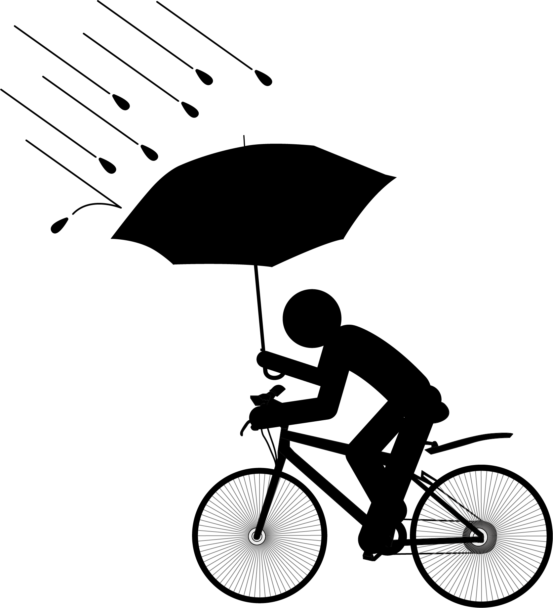
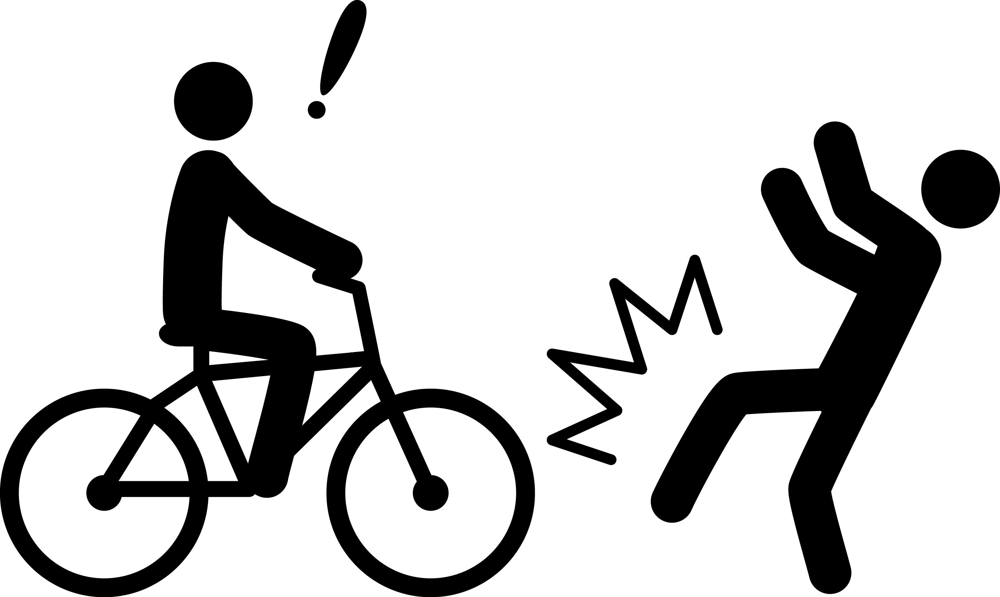

チャリンコロードとは？
ふと頭によぎった言葉。それは、「チャンプロード」。昔なつかしの暴走族を取り上げた雑誌である。
今でもあるのかと思い急に検索した結果、「近年、暴走族の衰退のため休刊」とあった。
近年のヤンキーは「力自慢」的なものに移行しているのかと思い、「健康思考」の要素があるなと
ふと、「単車好きは？これの対照的であることはなんだ？」と疑問になり
「旧車」「ツーリング」「健康」「スポーツ」
と大雑把にジャンル分けをし、自身の環境を照らし、少し気になっていたものがあったので
死語になりつつある「チャリンコ」（自転車の意味）
にフォーカスし、「自転車」の現環境をまとめたサイトをつくってみっぺ。で出来たものです。
チャリンコ一覧


近年では、自転車も保険加入は必須です。
「チャリンコを、漕ぎたきゃ入れよ任意保険。」
- danger1:速度超過

- danger2:傘差し運転

- danger3:衝突